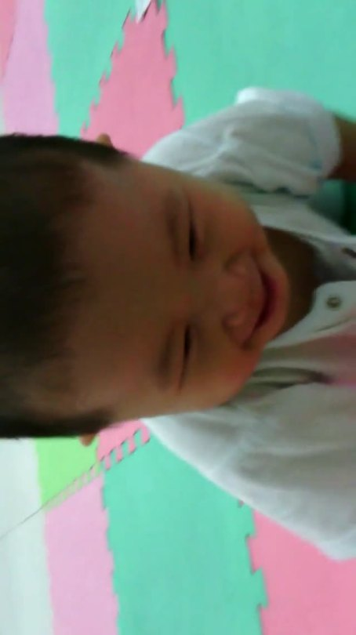
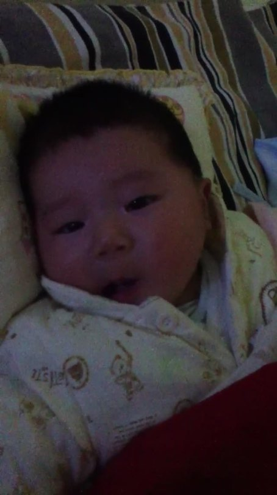

（一段视频）

视频封面（原视频已失效）这段视频是 2013 年 7 月拍的，时长约 21 秒。原视频文件托管在 Tumblr，如今已经失效，找不回来了。下面保留当时自动生成的封面画面。
倚天剑，争锋天下。。。

视频封面（原视频已失效）这段视频是 2013 年 7 月拍的，时长约 21 秒。原视频文件托管在 Tumblr，如今已经失效，找不回来了。下面保留当时自动生成的封面画面。
百日照

视频封面（原视频已失效）没多久就想说话了。
原视频文件托管在 Tumblr（时长约 24 秒），如今已经失效。下面保留当时自动生成的封面画面。
小树啊，亲情是世界上最温暖的词啊！
亲情是一种微妙的感觉，简单地说，就是你与亲人之间的感情，这些亲人首先包括爸爸、妈妈、爷爷、奶奶、外公、外婆、舅舅、舅妈，当然也包括很多亲戚。
不管是你开心，还是遇到麻烦的时候，你要第一时间想到亲人，亲人最愿意与你分享快乐，也最愿意跟你一起承担压力，能给你最大支持，能包容你所有的错误。
小树啊，你要出生之前，爸爸要出差去北京，临出发那天晚上就做了一个梦，梦见你了，第二天一大早，我对你妈讲，我梦见你了，是个男孩，很开心很健康的小子。本来预产期还有 2 周多，结果你小子蹭地一声，提前跑出来了。哈哈，你爸爸急忙赶回来，航班刚刚落到厦门跑道上，你就跑出来了。看到你第一眼的时候，我真不敢相信啊，这条生命就是我儿子。。那种心情等你长大有了小孩你就知道了。你妈妈从晚上 2 点一直到第二天 1 点半，辛苦了半天把你带来世界，当我们三人在一起时，那种感觉就像世界只有我们三人了，甜蜜和快乐啊。。小树，亲情啊！
小树，你的名字是出自伟大诗人屈原的《楚辞·九章·橘颂》，原文是“后皇嘉树，橘徕服兮。受命不迁，生南国兮。”，爸爸妈妈希望能够长成一颗大树，希望你能深深扎根在厦门这块土地上。爸爸妈妈自己也没有宏大的理想，也不会对你很大的要求。一定要说希望的话，爸爸希望你做个好人，然后一生平安；妈妈估计希望你早点娶媳妇生孙子，这是我猜的，你可以问问你妈。
（2013.5.20）
喜得龙子。。
1. 完成 SA project
2. 完成 GFSHOP
1. Paper about SA。Remark about SAe
2. Demo about SpiderMan
“一个人的快乐，不是因为他拥有的多，而是因为他计较的少。”
新年来了，我的人生也换了新气象，以前认为我就是一根擀面杖，来回在一块面团上翻滚，其实我是倚天剑，轻易不出鞘，哇咔咔！！
如愿注册到属于自己的域名，非常好记，朋友们有空常访问我的博客。http://wuchang.me